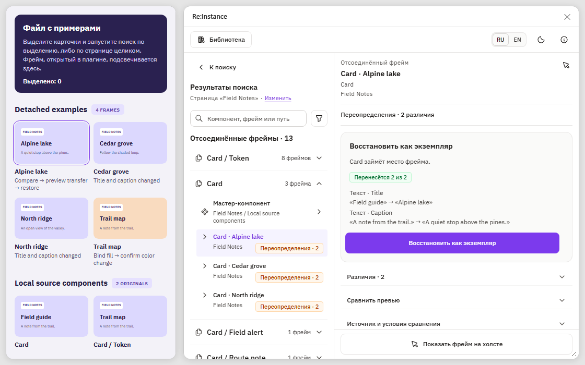

О проекте
При работе с готовыми дизайн-системами я сталкивалась с ситуациями, когда возможностей существующих компонентов не хватало для конкретной задачи. Приходилось отсоединять экземпляры и изменять их вручную. При этом у меня почти не было прямого контакта с командой, которая разрабатывала библиотеку. Объяснить, каких возможностей не хватает и насколько часто дизайнеры сталкиваются с такими ограничениями, было непросто.
Я подумала и о тех, кто разрабатывает дизайн-системы. Когда в файле десятки отсоединённых фреймов, разбирать их вручную слишком долго. Нужно найти каждый, сравнить с оригиналом и понять, какие изменения повторяются.
Так появился Re:Instance. Плагин помогает разобраться, что происходит с компонентами после отсоединения, и собрать примеры для обсуждения с командой дизайн-системы.
Что хотелось сделать
Первоначально я хотела автоматизировать поиск отсоединённых экземпляров и анализ изменений по исходным компонентам. Если в файле оказалось много разобранных копий одного элемента, важно не только посчитать их, но и понять, что дизайнеры в них меняли.
Дизайнер сможет показать команде библиотеки конкретные примеры, даже если они редко общаются напрямую. А разработчик дизайн-системы сможет увидеть повторяющиеся изменения без ручного сравнения каждого фрейма.
Позже я добавила оценку совместимости, восстановление экземпляров и поиск источников у компонентов, которые потеряли связь с библиотекой. Но принцип остался прежним: отсоединение само по себе не означает ошибку компонента. Иногда нужное свойство уже существует, а иногда дизайнеру действительно не хватает предусмотренного сценария.
Попробуйте Re:Instance
Встроенный в страницу интерактивный playground позволяет пройти основные сценарии на демонстрационных данных: запустить поиск, открыть отсоединённый фрейм, сравнить его с компонентом, посмотреть сводку и попробовать восстановление.

Открыть playgroundPlayground работает непосредственно на странице портфолио, без подключения к Figma. Он использует подготовленные данные, не изменяет настоящие файлы и не проверяет документ посетителя.
Решение 01
Найти отсоединения в нужной области
Поиск должен был подходить и для быстрой проверки одного экрана, и для большого файла. Поэтому я предусмотрела три области: выделение на холсте, текущую страницу и весь файл.
В результате плагин показывает отсоединённые фреймы и локальные мастер-компоненты. Находки группируются по исходным компонентам; у каждого фрейма видны его расположение и оценка сравнения. Для тех, кому нужно проверить конкретный элемент, есть поиск по названию и фильтры.
Отдельно продумала пустые результаты и недоступные источники. Если исходный компонент удалён или библиотека недоступна, фрейм не исчезает из списка: пользователь видит, почему его пока нельзя сравнить.
Решение 02
Показать не только факт, но и причину изменения
Найти отсоединённый фрейм мало. Нужно понять, что именно в нём изменили. Поэтому я решила сравнивать его с текущей версией исходного компонента.
Плагин анализирует пять групп отличий: контент, оформление, токены, раскладку и структуру. Изменения представлены в карточках «В компоненте / Во фрейме», чтобы не приходилось разбирать технические свойства вручную. Повторяющиеся одинаковые изменения сворачиваются, а при необходимости можно открыть подробности.
Для визуального сравнения добавила две миниатюры одного масштаба. Нажатие на изменение позволяет перейти к соответствующему слою на холсте Figma. При этом переименования можно скрыть: они не должны мешать оценке более важных отличий.
Плагин сравнивает с текущей версией компонента. Как он выглядел в момент отсоединения, узнать через этот механизм нельзя.
Решение 03
Отличить допустимые изменения от проблемных
Не всякое отличие требует переработки компонента. Например, текст можно изменить через Text property, видимость через Boolean property, а вложенный элемент через Instance swap. Если дизайнер отсоединил такой экземпляр, причина не обязательно в нехватке возможностей библиотеки.
Поэтому я добавила оценку результата сравнения. В интерфейсе четыре статуса: «Без потерь», «Переопределения», «Критично» и «Источник недоступен».
Оценка помогает понять, можно ли перенести изменения обратно в экземпляр, какие отличия требуют отдельного решения и где вывод пока сделать нельзя. Например, добавленные или переставленные слои не приравниваются к обычной смене текста. Даже когда изменение связано со слотом, его не всегда безопасно автоматически воспроизвести.
Мне было важно не создавать ложного ощущения, будто плагин способен исправить любой разобранный компонент одним нажатием.
Решение 04
Собирать аргументы для развития библиотеки
Само количество отсоединённых экземпляров мало что говорит о причинах. Поэтому в сводке компонента я объединила оценки фреймов, часто изменяемые элементы и повторяющиеся паттерны.
Например, если в нескольких фреймах скрывают один и тот же слой, возможно, стоит предусмотреть boolean-свойство. Если добавляют новые элементы, возможно, нужен слот. Регулярные изменения отступов могут подсказать, что существующая раскладка недостаточно гибкая.
Плагин формирует гипотезы, а не диагнозы. Они появляются, когда изменение повторяется как минимум в двух сравнимых фреймах и составляет не менее 30% таких фреймов компонента. По каждой гипотезе можно открыть примеры и решить, стоит ли менять компонент.
Это даёт конкретные примеры для обсуждения с командой дизайн-системы. Плагин показывает текущее состояние файла, но не измеряет рост числа отсоединений во времени.
Решение 05
Восстанавливать экземпляры без потери контроля
Позже я задумалась, можно ли вернуть отсоединённый фрейм к компоненту, если изменения совместимы с переопределениями.
Для подходящих случаев добавила восстановление экземпляра с переносом поддерживаемых изменений. Если исходный компонент входит в набор вариантов, можно проверить, не подходит ли другой вариант лучше, и выбрать его для восстановления.
Я отдельно продумала безопасность. Замена выполняется после подтверждения. Исходный фрейм не удаляется, а скрывается рядом с новым экземпляром; действие можно отменить. Если часть свойств не получится перенести, плагин предупреждает об этом до продолжения.
Также предусмотрела возврат привязок к переменным и стилям компонента. Повторная привязка может изменить внешний вид фрейма. Поэтому перед действием показываются значения «было → станет».
Решение 06
Что делать, когда Figma потеряла источник
Обычный отсоединённый фрейм найти сравнительно легко: Figma сохраняет информацию о его происхождении в `detachedInfo`. Сложнее, если после отсоединения фрейм превратили в новый мастер-компонент. В таком случае прежняя связь через API больше не доступна.
Я решила попробовать искать возможные источники по другим признакам: названию компонента и внутренних слоёв, структуре, используемым токенам и оформлению. Для локального мастер-компонента без связанных отсоединённых фреймов плагин может предложить похожие библиотечные компоненты, доступные по экземплярам в файле.
Но сходство ещё не доказывает, что один компонент произошёл от другого. Поэтому плагин помечает такие совпадения как предположения. Можно посмотреть, почему компоненты похожи, сравнить их и только после этого самостоятельно подтвердить источник. По одному предположению плагин ничего автоматически не заменяет.
Полностью автоматическое распознавание здесь было бы ненадёжным. Поэтому я оставила окончательное решение пользователю.
Решение 07
Обойти ограничение доступа к библиотеке
У поиска похожих компонентов обнаружилось ещё одно ограничение: Figma Plugin API не позволяет просто получить полный список компонентов подключённой библиотеки. Если экземпляров нужного компонента в файле нет, обычный поиск его не увидит.
Для этого я разработала сценарий каталога библиотеки. В файле самой библиотеки можно подготовить облегчённое описание компонентов, а затем подключить его в рабочем документе. Каталог сохраняет данные, необходимые для предварительного сравнения, и помогает находить кандидатов, которые иначе не попали бы в поиск.
Каталог не выдаёт совпадения за доказанный источник: после выбора кандидата пользователь проверяет пару и подтверждает связь самостоятельно. Каталог также не обновляется автоматически, при изменении библиотеки его нужно создать заново.
Каталог вошёл в версию 1.0. Его работу я проверила на тестовых данных, в браузерном превью и на реальной библиотеке Figma.
Решение 08
Не потерять контекст в небольшом окне
Нужно было уместить результаты поиска, сводку по компоненту и подробное сравнение в небольшом окне Figma.
Я выбрала две схемы навигации. В компактном окне пользователь последовательно переходит между списком, сводкой и деталями. В широком окне список остаётся слева, а выбранный объект открывается справа. Размер окна можно менять, не теряя выбранные настройки.
Отдельно связала навигацию плагина с холстом: выбор найденного фрейма или компонента в Figma открывает его карточку, а переход из результатов показывает нужный слой на холсте. Так проще проверять изменения прямо в макете.
Для больших файлов предусмотрела порционную обработку и постепенное сравнение объектов, чтобы список оставался доступным во время анализа. Также реализовала светлую и тёмную темы и интерфейс на русском и английском языках.
Итоги и дальнейшее развитие
Первую версию Re:Instance я разработала и отправила на проверку в Figma Community. В ней есть поиск отсоединённых фреймов, сравнение с текущими компонентами, анализ повторяющихся изменений, оценка совместимости, восстановление экземпляров и инструменты поиска возможных источников.
Это мой первый самостоятельно разработанный Figma-плагин. В работе я использовала AI-инструменты, а по ходу разработки глубже разобралась в возможностях и ограничениях Figma API. Особое внимание уделила безопасности изменений и контролю пользователя над действиями плагина.
Пока нет данных об использовании плагина другими дизайнерами, поэтому оценивать экономию времени рано. После публикации планирую собрать обратную связь и проверить, какие сценарии оказываются наиболее полезными, а какие стоит пересмотреть.